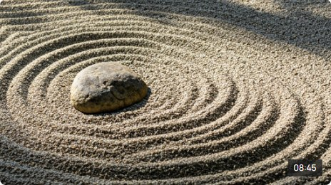
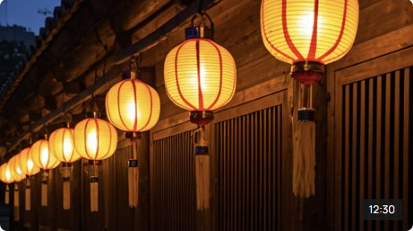
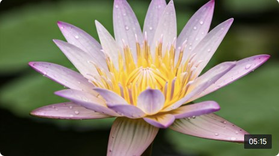
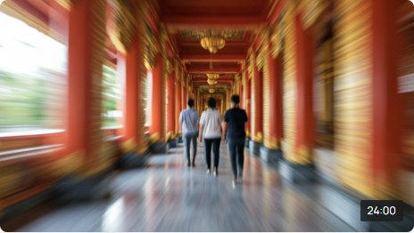
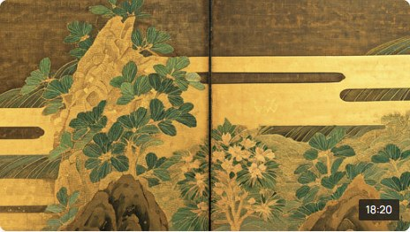
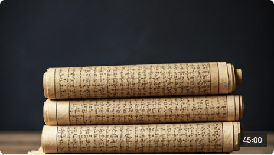

08:45真如之理：苑主開示
深入淺出地講解真如教義，指引在現代生活中實踐慈悲與智慧的方向。
透過影像，共感法樂。在冬期修行之際，讓我們透過各類精選影片，重溫莊嚴的法會瞬間與教化真諦。
今年冬期修行的正式啟動，集結了全球信徒的誠心。以此法要揭開為期一個月的精進之旅，感受心靈的洗滌與光芒。

08:45深入淺出地講解真如教義，指引在現代生活中實踐慈悲與智慧的方向。

12:50追溯真如苑創立初期的艱辛與法緣，重溫開祖夫婦的悲願與奉獻。

05:15精選法語配以優美自然影像，提供每日冥想與省思的片刻寧靜。

24:00真如苑在世界各地的社會公益活動，展現佛法如何轉化為具體的利他行動。

18:20回顧立春之際的除災招福法要，感受驅除三毒、迎接清淨之心的喜悅。

45:00學術性與實踐性並重的專題講座，引導信眾深入經典的核心思想。